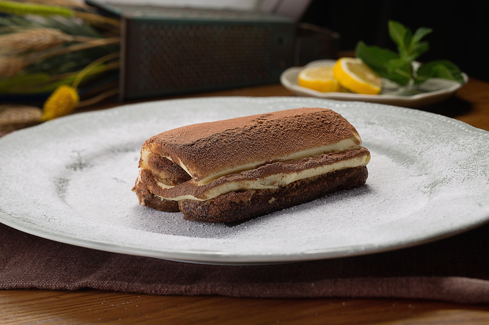

Tiramisu
210 Min
simple
20.02.2025
- 250 g Mascarpone
- 3 Eier
- 80 g Zucker
- 200 ml Espresso oder starker Kaffee
- 3 EL Amaretto
- 200 g Löffelbiskuits
- 50 g Kakao zum Bestäuben
Zubereitung
210 min. Gesamtzeit
30 min. Zubereitungszeit
180 min. Koch & Ruhezeit
Zuerst bereiten Sie 200 ml Espresso oder sehr starken Kaffee vor
und lassen Sie ihn abkühlen. Mischen Sie den Kaffee mit 3 EL
Amaretto in einer flachen Schüssel. Trennen Sie die Eier und
schlagen Sie das Eiweiß mit einer Prise Salz steif. Stellen Sie
das steif geschlagenen Eiweiß in den Kühlschrank. In einer
separaten Schüssel die Eigelbe mit 80 g Zucker schaumig schlagen,
bis die Mischung hellund cremig ist (ca. 5 Minuten).
Fügen Sie 250g Mascarone zu der Eigelb-Zucker-Mischung hinzu und
rühren Sie vorsichtig, bis keine Klümpchen mehr vorhanden sind.
Heben Sie das steif geschlagenen Eiweiß vorsichtig unter die
Mascarpone-Creme, um eine luftige Konsistenz zu erhalten.
Tauchen Sie danach die Löffelbiskuits kurz ind die
Amaretto-Kaffee-Mischung, sodass sie leicht durchtränkt sind, aber
nicht zu weich werden. Zu guter letzt wird geschichtet, beginnen
Sie mit einer Schicht Löffenbiskuit in einer Form (ca. 24 x 16
cm). Verteilen Sie danach die Hälfte der Mascarpone-Creme
gleichmäßig darüber. Wiederholen Sie den Vorgang mit einer
weiteren Schicht Löffelbiskuitt und der restlichen Creme.
Decken Sie das Tiramisu ab und lassen Sie es für mindestens 6-8
Stunden im Kühlschrank ruhen, am besten über Nacht. Vor dem
Servieren das Tiramisu mit Kakaopulver bestäuben und genießen!